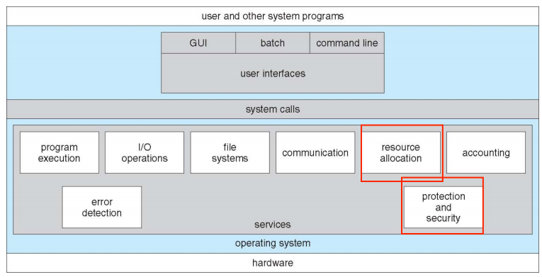
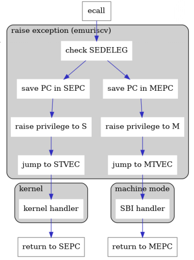
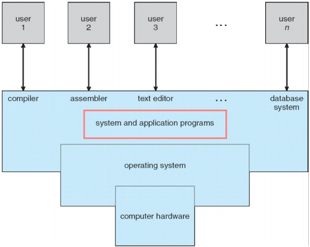

Operating System Services
Operating System Services

操作系统提供的服务有：
-
User/Programmer Visible
-
User interface
大部分操作系统都有UI，比如CLI和GUI，或者batch
-
Program execution: from program to process
把程序载入内存并执行
终止程序运行，包括正常结束和非正常结束
-
I/O operations
-
File-system manipulation
读、写、创建、删除文件和目录，搜索或列出文件和目录
权限管理
-
Communications
通过共享的内存或信息传递，在同一系统或网络上交换信息
-
Error detection
操作系统需要持续地关注可能出现的错误，包括CPU、memory、I/O设备、程序中的错误，并采取合适的措施确保正确性和一致性
-
-
System View
-
Resource allocation
给并发运行的多个用户或工作分配资源 (包括CPU、memory、file、I/O设备)
-
Accounting/Logging
记录哪一个用户使用了多少、什么类型的资源
-
Protection and security
protection提供了一种机制，来控制对系统资源的访问，包括：
-
访问控制：控制对资源的访问
-
隔离：进程之间不能互相干扰
security验证用户身份，并避免对I/O设备的无效访问
-
User Operating System Interface - CLI
CLI有一个循环，用来获取命令和执行命令
这些命令可以是内置的，也可以是程序名字，大多数命令是系统程序实现的
终端就是一个程序，输入命令行指令之后就会fork一个子进程
-
User Operating System Interface - GUI
-
Touchscreen Interfaces
-
Voice Commands
System Calls
一般地，一个数字会和每个系统调用相关联，系统调用的接口维护一张数字索引表
由内核调用系统调用并返回结果，用户程序不需要知道细节，只需要API即可
System Calls Implementation
系统调用号，区分不同系统调用，一旦确定之后，几乎不会被复用、更改
系统调用，可以直接接受参数，判断调用哪个；也可以不直接接受参数，而是把系统调用号放到某个寄存器中
返回值，约定好放到哪个寄存器里就好
优化方法：尽可能减少发生系统调用的次数
Application Programming Interface
用户一般通过API进行系统调用，而不是直接system call
-
Win32 API for Windows
-
POSIX API for UNIX/Linux
-
Java API for JVM
更高一层抽象，因为系统调用的实现和系统本身相关，不同的操作系统内核对系统调用的实现是不一样的，如果不加一层壳，兼容性就比较差
man function可以查看API 的详细信息
系统调用是用户态程序使用操作系统服务的接口，只要在代码中嵌入一条特定的指令，就能对操作系统发系统调用信号
Parameter Passing
有三种常见的参数传递方式：
- Register：把参数放进寄存器，有数量限制
- Block：把参数放在一个内存块中，把内存块的地址放进寄存器
- Stack
EXECVE
-
On Linux/x86
系统调用号放eax，参数1、2、3分别放入ebx、ecx、edx，int 0x80，返回结果放在eax中
Execve("/bin/sh", 0, 0);
给路径，解析路径下的可执行文件，把可执行文件加载到进程中
eax: 0x0b
ebx: addr of "/bin/sh"
ecx: 0
-
On Linux/ARM
-
In RISC-V
ecall的执行流程

Types of System Calls
每一个系统调用都有各自的系统调用号每个系统调用都是完成自己特定的功能
-
Process Control
虽然进程看似拥有了整个虚拟地址空间，但是操作系统会"记账"，决定哪些地址空间可以访问，哪些不能；把一个program加载执行的时候，程序的加载器会解析程序中有哪些global data，等等等等，那些内存是不能被操作的；没有向操作系统显式地申请过的空间，是不能直接操纵的
Windows: CreateProcess(); ExitProcess(); WaitForSingleObject();
Unix: fork(); exit(); wait();
-
File management
Windows: CreateFile(); ReadFile(); WriteFile(); CloseHandle();
Unix: open(); read(); write(); close();
-
Device management
Windows: SetConsoleMode(); ReadConsole(); WriteConsole();
Unix: iocrl(); read(); write();
-
Information maintenance
Windows: GetCurrentProcessID(); SetTimer(); Sleep();
Unix: getpid(); alarm(); sleep();
-
Communications
Windows: CreatePipe(); CreateFileMapping(); MapViewOfFile();
Unix: pipe(); shmget(); mmap();
-
Protection
Windows: SetFileSecurity(); InitalizeSecurityDecriptor(); SetSecurityDecriptorGroup();
Unix: chmod(); umask(); chown();
void *mmap(void *start, size_t length, int prot, int flags, int fd, off_t offset);
该函数主要用途有三个： 1、将一个普通文件映射到内存中，通常在需要对文件进行频繁读写时使用，这样用内存读写取代I/O读写，以获得较高的性能； 2、将特殊文件进行匿名内存映射，可以为关联进程提供共享内存空间； 3、为无关联的进程提供共享内存空间，一般也是将一个普通文件映射到内存中。
System Services (Programs)

系统程序 (system programs) 为程序开发和运行提供了便捷的环境，可以被分为
- 文件处理：创建、删除、复制
- 状态信息有时存放在file modification中
值得注意的是，系统程序是运行在用户态的，不是内核态
Linkers & Loaders
lazy binding：把某件事情推迟到最后一刻再做，因为在做某件事的时候是有cost的，这样能避免做无用功
gcc -E 可以把宏定义展开，看当前编译时宏定义到底是什么
-
静态链接的可执行文件，是一个自包含的可执行文件，会把最后生成的文件全部包含在这个可执行文件中
如，printf()，是在libc中实现的，如果是静态链接，最后生成的可执行文件会把printf()和main()放在一起
静态链接的程序加载到内存中比较慢，但对环境的依赖性比较小，这样系统调用的接口不发生变化，不过有没有libc，都能运行
-
动态链接的程序，size会大大减小
运行时，Loader在系统中找到第一个libc.so文件，加载到内存中
看libc.so的基地址是多少，然后完成main这个对libc依赖的elf的fix-up
系统的库和库之间也会相互依赖，解析一个库的时候会查看它需要哪些库，再去加载这些库，直到所需要的库都加载完
这是一个递归过程，是很消耗时间的
Lazy Binding
上面提到的动态链接，在加载时就要完成对所有库的加载
但是如果，某次程序执行的时候不需要printf，把它加载进来就白干了，所以我们选择在第一次printf执行的时候再加载库
在代码中加入resolver这个函数，执行到printf发现没有load，由resolver去加载printf函数